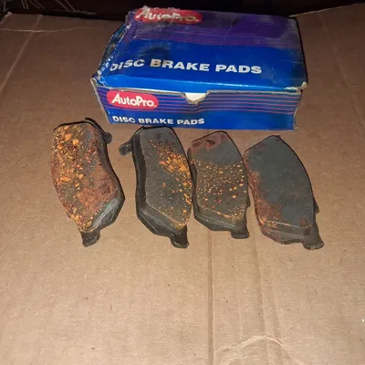
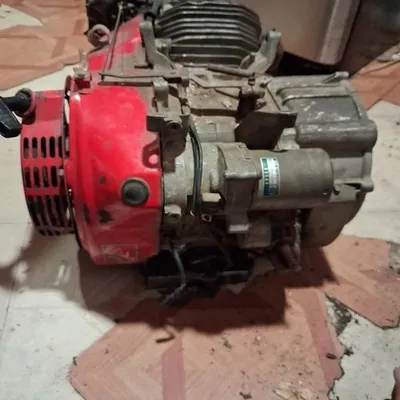
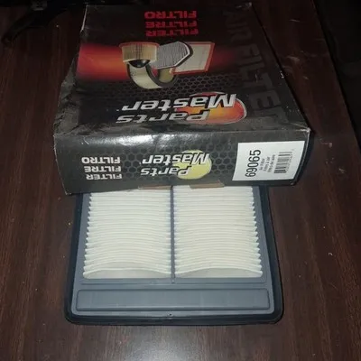
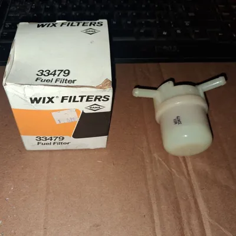
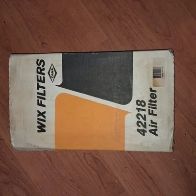

Distributor Rotors
1970-1995 KEM W282X Distributor Rotor NOS Honda Civic Accord Subaru GL DL
W282X
Fits 1986-1989 Honda Accord · 1973-1987 Honda Civic (312 listed)
$12.99
View details57 parts whose listing names at least one Honda vehicle, mostly ignition & tune-up, air filters and engine parts. Fit depends on year, model and engine, so check the full vehicle list on each part page or message us before you buy.
57 parts
Online checkout through Square. Ships from Carbondale, PA, or pick up by confirmed appointment only. Fitment question? Message us.
W282X
Fits 1986-1989 Honda Accord · 1973-1987 Honda Civic (312 listed)
$12.99
View details
KVR544
Fits 1982-1983 Honda Accord · 1983-1987 Honda Prelude (12 listed)
$55.99
View details
W3011
Fits 1986-1989 Honda Accord · 1989-1990 Honda Prelude (34 listed)
$20.99
View details
W2083
Fits 1988-1991 Honda CRX · 1988-1991 Honda Civic (62 listed)
$14.99
View details
W3034
Fits 1973-1974 Honda Civic · 1979-1983 Honda Accord (230 listed)
$23.99
View details
W298
Fits 1981-1989 Honda Accord · 1980-1987 Honda Civic (144 listed)
$12.99
View details
W2069
Fits 1990-1993 Honda Accord · 1985 Honda Civic (39 listed)
$15.99
View details
9080
Fits 1980-1989 Honda Accord · 1988-1991 Honda CRX (223 listed)
$14.99
View details
9081
Fits 1994-1995 Honda Passport · 1991-1997 Isuzu Rodeo (147 listed)
$21.99
View details
3M-7162
Fits 1988-1991 Honda CRX · 1984-1987 Honda Civic (74 listed)
$29.99
View details
045-0264
Fits 1988-1991 Honda CRX · 1988-1991 Honda Civic (47 listed)
$15.99
View details
103-2263
Fits 1976-1983 Honda Accord · 1973-1983 Honda Civic (4 listed)
$26.99
View details
045-0250
Fits 1984-1985 Honda Accord · 1984-1987 Honda Civic (50 listed)
$12.99
View details
14082
Fits 1988-1997 Honda Accord · 1990-1991 Honda CRX (2063 listed)
$12.99
View details
H2108
Fits 1976-1981 Honda Accord · 1976-1982 Honda Civic (3000 listed)
$12.99
View details
H9409
Fits Honda Civic
$15.99
View details
17220-RBJ-000
Fits 2010-2014 Honda Insight (14 listed)
$21.99
View details
33478
Fits 1994-1996 Honda Passport · 1999-2004 Ford Mustang (1479 listed)
$14.99
View details
33479
Fits 1994-1996 Honda Passport · 1999-2004 Ford Mustang (817 listed)
$15.99
View details
33488
Fits 1986-1989 Honda Accord · 1975-1983 Honda Civic (1600 listed)
$26.99
View details
33489
Fits 1986-1989 Honda Accord · 1980-1983 Honda Civic (1658 listed)
$25.99
View details
33568
Fits 1998-2001 Honda Accord · 1984-1998 Honda Civic (225 listed)
$14.99
View details
GC05
Fits Honda
FOR PARTS OR REBUILD · UNTESTED · NO RETURNS
$199.99
View details - for parts · no returns
W3018
Fits 1986-1989 Honda Accord · 1984-1987 Honda Prelude (39 listed)
$16.99
View details
W3038
Fits 1988-1991 Honda CRX · 1988-1991 Honda Civic (25 listed)
$16.99
View details
A3490
Fits 1976-1978 Honda Accord · 1977-1983 Honda Civic (86 listed)
$29.99
View details
CV4405
Fits 1986-1989 Honda Accord · 1986-1996 Acura Integra (98 listed)
$19.99
View details
Fits 1978 Honda · 1978 Mercedes-Benz
$12.99
View details
3459
Fits 1984-2009 Honda Civic · 2007-2009 Honda Fit (535 listed)
$13.99
View details
D130
Fits 1977-1981 Honda Accord (13 listed)
$22.99
View details
69065
Fits 2006-2015 Honda Civic (88 listed)
$14.99
View details
66-1191
Fits 1988-1991 Honda CRX · 1988-1997 Honda Civic (401 listed)
$29.99
View details
JH-110
Fits 1976-1983 Honda Accord · 1973-1983 Honda Civic (87 listed)
$19.99
View details
JH-119
Fits 1984-1987 Honda Civic · 1984 Honda Wagovan (37 listed)
$23.99
View details
JH-151
Fits 1988-1991 Honda CRX · 1988-1991 Honda Civic (68 listed)
$28.99
View details
JH95
Fits 1988-1991 Honda CRX · 1988-1991 Honda Civic (52 listed)
$24.99
View details
JR89
Fits 1981-1989 Honda Accord · 1981-1989 Honda Prelude (80 listed)
$16.99
View details
DR-39
Fits 1994-1995 Honda Passport · 1986-2005 Buick Century (2075 listed)
$29.99
View details
JH125
Fits 1984-1985 Honda Civic (24 listed)
$26.99
View details
JH207
Fits 1992-1997 Honda Accord · 1992-2001 Honda Prelude (104 listed)
$19.99
View details
JR-111
Fits 1991 Honda Prelude (5 listed)
$19.99
View details
JR72
Fits 1976-1989 Honda Accord · 1973-1987 Honda Civic (693 listed)
$12.99
View details
SG12
Fits 1984-1989 Honda Accord · 1986-1991 Acura Integra (75 listed)
$24.99
View details
V256
Fits 1994-1996 Honda Passport · 1989-1994 Isuzu Amigo (71 listed)
$17.99
View details
H-25
Fits 1992-1995 Honda Civic (11 listed)
$24.99
View details
F7209
Fits 2012-2015 Honda Civic · 2007-2013 Honda Fit (48 listed)
$17.99
View details
F113398
Fits 1994-2002 Honda Passport · 1989-1993 Isuzu Amigo (239 listed)
$14.99
View details
Fits Honda GX340
$89.99
View details
24815
Fits 2003-2017 Honda Accord · 2007-2016 Honda CR-V (466 listed)
$21.99
View details
24817
Fits 2002-2011 Honda Civic (19 listed)
$22.99
View details
33330
Fits 1988-1991 Honda CRX · 1988-1991 Honda Civic (34 listed)
$12.99
View details
33460
Fits 1988-1989 Honda Accord (20 listed)
$12.99
View details
33479
Fits 1986-1989 Honda Accord · 1988-1990 Honda Prelude (41 listed)
$21.99
View details
42218
Fits 1986-1989 Honda Accord (32 listed)
$25.99
View details
46064
Fits 1990-1993 Honda Accord (35 listed)
$13.99
View details
51334ST
Fits 1985-2002 Honda Accord · 1997-2001 Honda CR-V (149 listed)
$21.99
View details
51392
Fits 1979-1983 Honda Accord · 1980-1987 Honda Civic (99 listed)
$19.99
View details